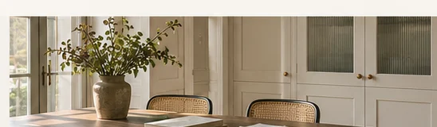

FITTED STORAGE / DESIGN DIRECTION
Utility Room Cabinets
Storage that helps the laundry and household essentials find their place.
Enquire about this style ↗
CabivellaSpaces,
considered.
considered.
CabivellaSpaces,
considered.
considered.
CabivellaSpaces,
considered.
considered.
CabivellaSpaces,
considered.
considered.
THE IDEAMade for a room,
Made for a room,
not just a photograph.
A useful utility room keeps detergents, cleaning equipment and laundry organised without blocking services.
Leave manufacturer-recommended clearances and access panels for maintenance.
DESIGN APPROACHLaundry and utility cabinetry
PRACTICAL CONSIDERATIONAppliance access and ventilation
BEFORE AN ORDERA precise brief.
A precise brief.
A better result.
Dimensions, finish samples, fittings, service access, installation responsibilities and delivery arrangements are agreed separately for every project. No fixed dimensions, certifications, guarantee terms or availability are implied by these concept pages.
Send your requirements ↗Other spaces to consider
START A CONVERSATION
Make an enquiry ↗A space worth planning.
Share your measurements, ideas or a brief. We will use them to discuss a suitable cabinetry direction.